안나수이는 20대초반 일본살때
야곰야곰 네일모으다가
영쿡으로 온후 여기서야 향수빼고는 구할길이 없으니까
관심에서 멀어졌더랬다
근데 최근 ASOS나 여러
뷰티웹사이트에 안나수이 제품들이 보이기 시작 +_+
그리고 여기서는 안나수이 제품 겁나 비싸진다;;
립스틱하나에 £23 후덜덜덜;;;
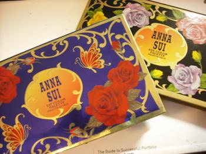
어쩌다보니 립 / 아이 둘다 사게되었다
(escentual.com 에서 반값하길래;;;; ☞☜;;;
£28 → £14 each :D )
발색샷 잘 찍을 자신이 없어서 검색해서 가져왔다^^
출저는:
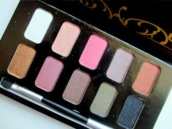
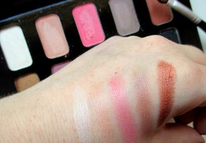
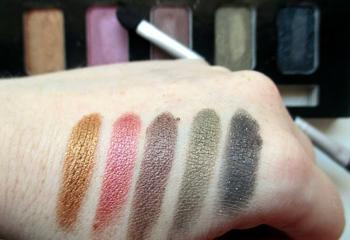
원래 시작은
계속 브라운계열만 사용하다보니 지겨워져서
붉은색상의 섀도우를 찾고있었는데
검색하다보니 요 바로위 사진 왼쪽 두번째 색상이 늠 맘에드는거라 +_+
결국 충동구매;;;
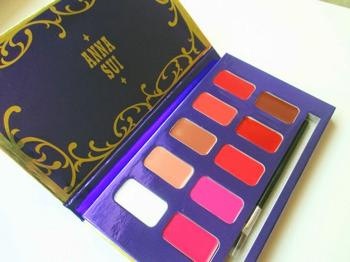
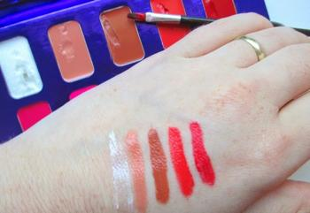
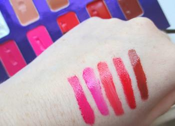
안나수이 립스틱은 좋아라합니다
이제껏 끝까지 다쓴게 2종류 정도
립글로스도 재구매 꽤 많이했었고 :)
첨에 받아서 테스트하는데 제형이 엄청 물러서 놀랐음
젤 맘에드는 색은 아래칸 왼쪽에서 두번째 / 세번째 :)
최근 열심히 바르고 다닌당
날이추워져서 그런지
로즈브라운 / 로즈색 뭐 이런단어에 꽂혀서
구경다녔다^^;;
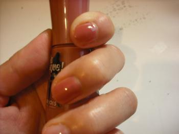
이것도 인터넷 떠돌아댕기다 낚여서 구입한
Bourjois Nail
색상은 Beige Glamour
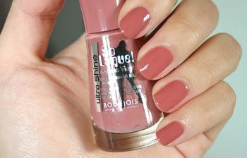
이것도 내가찍은것보다 멀쩡한 사진으로 가져왔다 ㅜㅜ
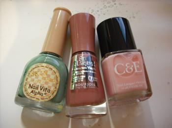
최근 자주 사용하는 네일 :)
스킨푸드 / 부르조아 / 크랩트리&에블린
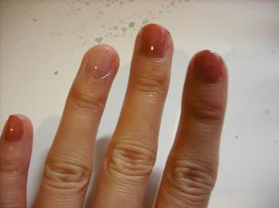
올 하반기는 요색을 자주 사용할듯 :)
(스킨푸드 자몽주에 이어 완전 취향인 색을 발견해서 기쁘다능//)
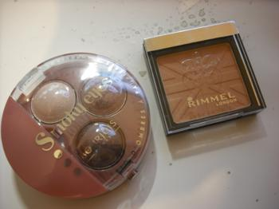
그리고 네일이랑 같이 집어온
부르조아 아이섀도우 Rose Vintage
림멜 블러셔 Bronze
색조는 색상이 미묘~~~하게 다 달라서
자꾸 사고싶은게 문제에요 ㅜㅂㅜ
이어지는 잡담
*림멜에서 이번에 Apocalips Matte Lip이 나왔는데
색은 예쁜데 이거 냄새 왜이래 ㅜㅜ 이상해 ㅜㅜ
*Dior 플루이드 스틱 - 원더랜드 매장에서 발라봤을때는
색이 너무너무 예뻤는데 / 그리고 구입한후 한 두어번 사용할때까지도
갈수록 이 핑크색이 맘에안든다;;;
한동안 두었다 나중에 다시 사용하면 맘에들려나;;;
*반대로 Revlon 립버터 한동안 흥미를 잃어서 전혀 사용안하다가
어제 Sorbet 백만년만에 발라봤는데 엄훠 맘에들어 +_+
거울보고 립스틱 바르다가 빵끗웃었다 ㅋㅋㅋ
신기한 코스메틱의 세계 ^^***
이번달 지름 끗!!